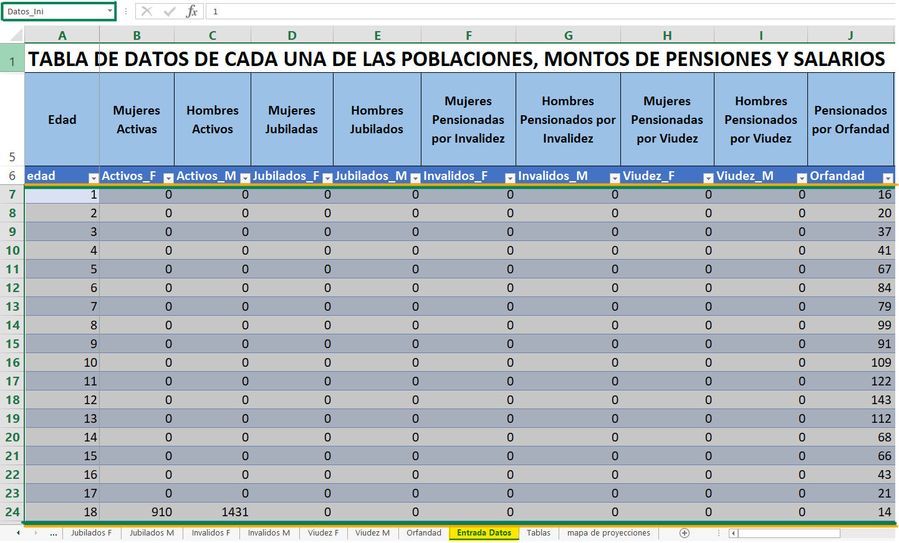
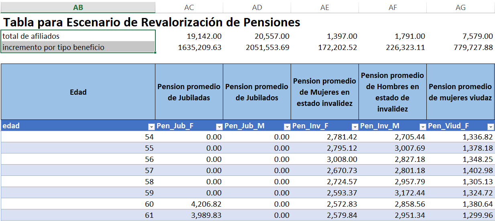

3 Condiciones Iniciales
El modelo cuenta con una variedad de hojas o secciones en las cuales es necesario plantear condiciones iniciales que permitan el desarrollo y el buen funcionamiento del modelo. A continuación se detallan cada una de ellas:
3.1 Entrada de Datos [Entrada Datos]
Como parte inicial para la implementación y uso de esta herramienta tenemos la hoja de [Entrada Datos] en ella se encuentran variables o parámetros importantes de cada una de las poblaciones, montos de pensiones, salarios y los escenarios de Revalorización de Pensiones:
3.1.1 Tabla de Datos de Cada una de las Poblaciones, Montos de Pensiones y Salarios
En esta sección se encuentra los datos correspondientes a la población del Régimen IVM, a toda la información que se encuentra contenida en esta tabla se le ha llamado “Datos_Ini”
- [edad] edad de la población comprendida entre los 0 y 110 años.
- [Activos_X] cantidad de afiliados activos de género X por edad.
- [Jubilados_X] cantidad de jubilados de género X por edad.
- [Invalidos_X] cantidad de pensionados por invalidez de género X por edad.
- [Viudez_X] cantidad de pensionados por viudez de género X por edad.
- [orfandad] cantidad de pensionados por orfandad de edad x.
- [Sal_Act_X] salario de afiliados activos de género X por edad.
- [Pen_Jub_X] pensión promedio de jubilados de género X por edad.
- [Pen_Inv_X] pensión promedio de afiliados de género X en estado de invalidez por edad.
- [Pen_Viud_X] pensión promedio para viudez de género X por edad.
- [Pen_Orfa] pensión promedio de orfandades por edad.
- [Sus_X] cantidad de afiliados en suspenso de género X por edad.
- [tcot_sus_X] tiempo promedio de cotización de afiliados en suspenso de género X por edad.
- [Sal_sus_X] salario promedio de afiliados en suspenso de género X por edad.

3.1.2 Tabla para Escenario de Revalorización de Pensiones
A la información comprendida en esta tabla se le ha llamado “Tpenrevalora”. En esta sección se efectúan los cálculos para mantener el poder adquisitivo de las pensiones a lo largo del tiempo de otorgamiento del beneficio, tomando como parámetro de esta disminución el efecto de alzas en el nivel de salarios, costo de la vida a partir de la inflación y distribuyendo el incremento de conformidad a la escala del beneficio adquirido, así como lo menciona el Artículo 152 del Reglamento General de la Ley del Seguro Social.(IHSS 2005)
- [Total de afiliados] aquí se realiza la suma de las cantidades de pensionados Jubilados, Inválidos, Viudos y Orfandad por sexo, tomados de la tabla “Datos_Ini”
\[ Total\_af_{Y} =\sum_{x=1}^{110} Datos\_Ini[Y_x] \] Donde:
\(Total\_af_{Y}\) = cantidad total de afiliados por cada uno de los tipos de beneficios Y.
\(Y_x\) = cantidad de afiliados de Invalidez, Viudez, Orfandad y Jubilados de edad x.
[Incremento por tipo de beneficio] aquí se establece el nuevo monto para cada una de las pensiones de jubilados, inválidos, viudez y orfandad por sexo.
[Tpenrevalora] aquí se establecen los cálculos para la revalorización de las pensiones promedios de los jubilados, inválidos, viudos y orfandad tanto por edad como por sexo, ejemplo:
Donde:
\(Jubilados\_F\) = cantidad total de jubilados a la edad x.
\(Pen\_Jub\_F\) = pensión promedio de jubilados de edad x.
\(Total\_af\_{Jub}\) = cantidad total de afiliados jubilados.
\(Incre\_bef\_{Jub}\) = incremento por cada tipo de beneficio.
La fórmula antes descrita nos establece el monto promedio con la revalorización de las pensiones para mujeres jubiladas, siguiendo esa misma analogía se determina la revalorización para el resto de grupos y género.
